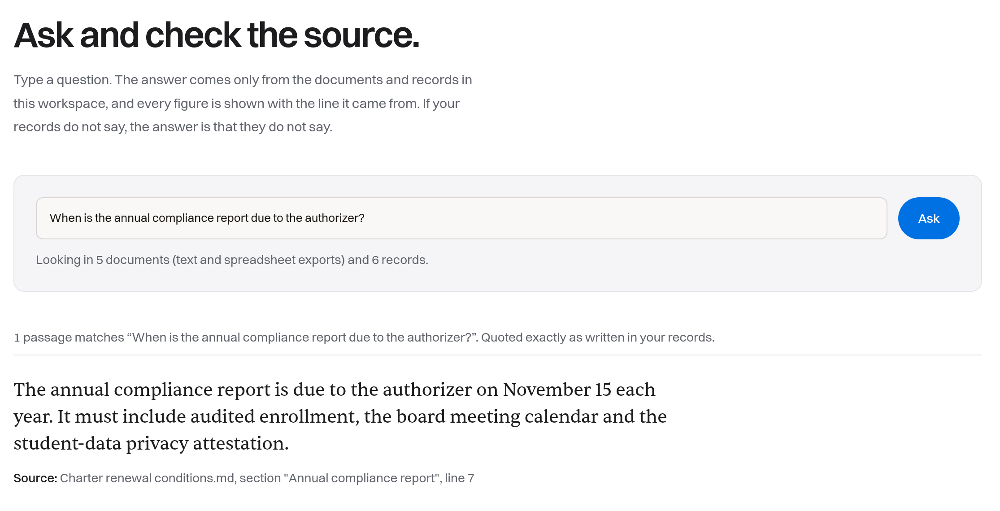
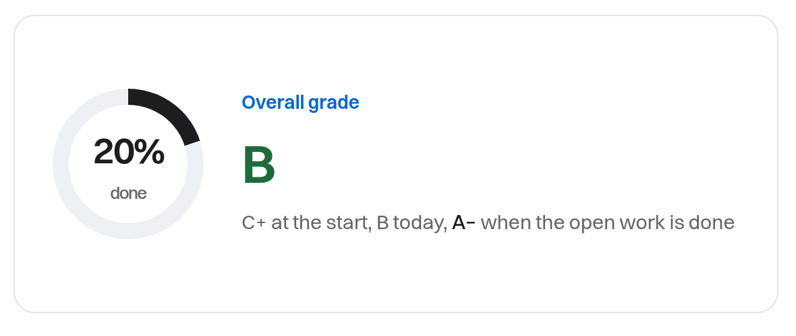
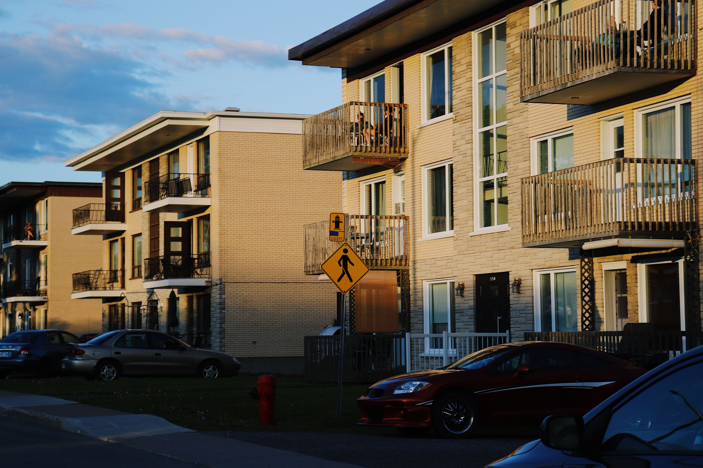

Fourteen orders wait on the part.The latest batch failed inspection. Call those customers first.
If this part shows up late, which orders and customers does it hold up?
Arthur answers
Fourteen orders wait on it, and the latest batch failed inspection.
Open ordersInspection recordsSupplier email
Next stepCall those customers first.
Example data.
Ask a question in the workspace. The answer comes only from your records, and each figure is shown with the file and line it came from.




Demonstration data.
One customer, filed three ways
One customer.
One record you can trust.

Pure intelligence.
For a fuller life.
Before you act on an answer, you can verify who it concerns, where each figure came from, when it was true, what supports it and what changed.
Example data.
If this part shows up late, which orders and customers does it hold up?
Fourteen orders wait on it, and the latest batch failed inspection.
Next stepCall those customers first.
Example data. In your workspace every figure is shown with its line, exactly like this.
What is going on, and what should I do about it?




Example questions. Photography is licensed stock.